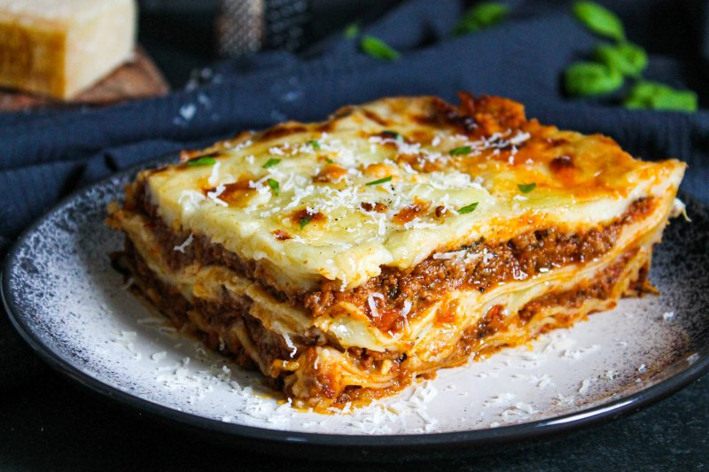

Lasagne is a stoady traditional Italian Meal
(1) In a large pan, heat the olive oil over a low heat. Fry the onion, carrot, celery and garlic for 5 mins, or until softened. Add the mince and fry on a medium heat until golden.
(2) Meanwhile, make the white sauce. Melt the butter in a small saucepan over a low heat and add the flour. Whisk until combined and cook on low for 1-2 mins